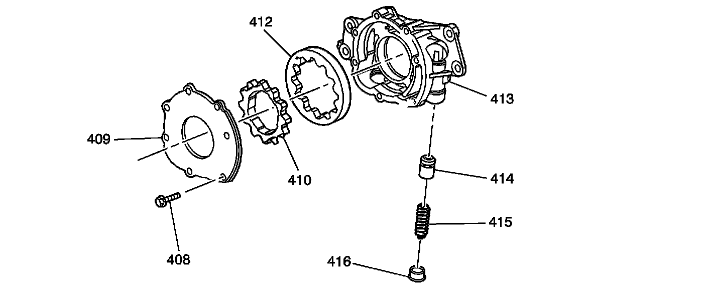

Oil Pump Assembly
Disassembled Views
Oil Pump Assembly
Oil Pump Assembly:

408 - Bolt
409 - Oil Pump Housing Cover
410 - Oil Pump Drive Gear
412 - Oil Pump Driven Gear
413 - Oil Pump
414 - Oil Pump Pressure Relief Valve
415 - Oil Pump Pressure Relief Valve Spring
416 - Oil Pump Housing Plug